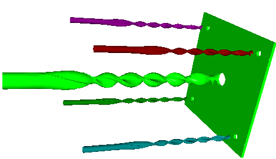

Drills.
Let's create a scene of five drills and a plate with five holes below the drills.
To start with, let's write the function creating the clip of the drill of the specified radius. The drill clip will be a contour of 8 line segments and 4 arcs. The function creating the clip will be the following:
sgCContour* CreateDrillSection(double rad)
{
sgCObject* objcts[6];
objcts[0] = sgCreateLine(0.0, -0.99*rad, 0.0, -0.05*rad, -0.99*rad, 0.0);
objcts[1] = sgCreateLine(-0.05*rad, -0.99*rad, 0.0, -0.05*rad, -0.97*rad, 0.0);
SG_ARC arcGeo;
SG_POINT arcP1;
SG_POINT arcP2;
SG_POINT arcP3;
arcP1.x = -0.05*rad; arcP1.y = -0.97*rad; arcP1.z = 0.0;
arcP2.x = -1.0*rad; arcP2.y = 0.0; arcP2.z = 0.0;
arcP3.x = -0.87*rad; arcP3.y = -0.5*rad; arcP3.z = 0.0;
arcGeo.FromTreePoints(arcP1,arcP2,arcP3,false);
objcts[2] = sgCreateArc(arcGeo);
arcP1.x = -1.0*rad; arcP1.y = 0.0; arcP1.z = 0.0;
arcP2.x = -0.05*rad; arcP2.y = 0.0; arcP2.z = 0.0;
arcP3.x = -0.35*rad; arcP3.y = -0.33*rad; arcP3.z = 0.0;
arcGeo.FromTreePoints(arcP1,arcP2,arcP3,false);
objcts[3] = sgCreateArc(arcGeo);
objcts[4] = sgCreateLine(-0.05*rad, 0.0, 0.0, -0.05*rad, 0.99*rad, 0.0);
objcts[5] = sgCreateLine(-0.05*rad, 0.99*rad, 0.0, 0.0, 0.99*rad, 0.0);
sgCContour* cnt1 = sgCContour::CreateContour(objcts,6);
sgCContour* cnt2 = (sgCContour*)cnt1->Clone();
SG_POINT rotAxeP = {0.0, 0.0, 0.0};
SG_VECTOR rotAxeDir = {0.0, 0.0, 1.0};
cnt2->InitTempMatrix()->Rotate(rotAxeP,rotAxeDir,3.14159265);
cnt2->ApplyTempMatrix();
cnt2->DestroyTempMatrix();
objcts[0] = cnt1;
objcts[1] = cnt2;
return sgCContour::CreateContour(objcts,2);
}
Then let's create five drills - four drills with radius 1 and one drill - with 2.5 - using the operation of constructing a solid from clips. The following function creates a drill:
sgCObject* CreateDrill(double rad, double dH)
{
sgC2DObject* drill_1_sections[10];
double params[10];
memset(params,0,sizeof(double)*10);
drill_1_sections[0] = CreateDrillSection(rad);
SG_POINT rotAxeP = {0.0, 0.0, 0.0};
SG_VECTOR rotAxeDir = {0.0, 0.0, 1.0};
SG_VECTOR transVec = {0.0, 0.0, 1.0};
for (int i=1;i<7;i++)
{
drill_1_sections[i] = (sgCContour*)(drill_1_sections[0]->Clone());
drill_1_sections[i]->InitTempMatrix()->Rotate(rotAxeP,rotAxeDir,i*5.0*3.14159265/6.0);
transVec.z = dH*i;
drill_1_sections[i]->GetTempMatrix()->Translate(transVec);
drill_1_sections[i]->ApplyTempMatrix();
drill_1_sections[i]->DestroyTempMatrix();
}
SG_CIRCLE cirGeo;
cirGeo.center.x = cirGeo.center.y = 0.0; cirGeo.center.z = 7*dH+5;
cirGeo.normal.x = cirGeo.normal.y = 0.0; cirGeo.normal.z = 1.0;
cirGeo.radius = rad-0.1;
drill_1_sections[7] = sgCreateCircle(cirGeo);
drill_1_sections[7]->ChangeOrient();
cirGeo.center.z = 7*dH+10;
drill_1_sections[8] = sgCreateCircle(cirGeo);
drill_1_sections[8]->ChangeOrient();
cirGeo.center.z =7*dH+15;
drill_1_sections[9] = sgCreateCircle(cirGeo);
drill_1_sections[9]->ChangeOrient();
sgCObject* resul = sgSurfaces::SplineSurfaceFromSections((const sgC2DObject**)drill_1_sections,
params,10,true);
for (int i=0;i<10;i++)
sgDeleteObject(drill_1_sections[i]);
return resul;
}
And then we'll use this function to create the drills:
m_drills[0] = CreateDrill(1.0,5.0);
m_drills[1] = m_drills[0]->Clone();
m_drills[2] = m_drills[0]->Clone();
m_drills[3] = m_drills[0]->Clone();
m_drills[4] = CreateDrill(2.5,8.0);
Let's create a plate in the form of a box in which later on we'll construct the holes below the drills:
sgCObject* tmpOb1;
tmpOb1 = sgCreateBox(40.0,40.0, 1.0);
transVec.x = -20.0;
transVec.y = -20.0;
transVec.z = -4.0;
tmpOb1->InitTempMatrix()->Translate(transVec);
tmpOb1->ApplyTempMatrix();
tmpOb1->DestroyTempMatrix();
To create the holes let's use the boolean subtraction of cylinders with radii equal to the drill radii from the plate:
sgCCylinder* holes[5];
for (int i=0;i<4;i++)
holes[i] = sgCCylinder::Create(1.0, 20.0, 24);
holes[4] = sgCCylinder::Create(2.5, 20.0, 24);
for (int i=0;i<5;i++)
{
tmpGroup = sgBoolean::Sub((const sgC3DObject&)(*tmpOb1),
(const sgC3DObject&)(*holes[i]));
ASSERT(tmpGroup->GetChildrenList()->GetCount()==1);
sgDeleteObject(tmpOb1);
tmpGroup->BreakGroup(&tmpOb1);
sgDeleteObject(tmpGroup);
sgDeleteObject(holes[i]);
}
See also:
sgSurfaces::SplineSurfaceFromSections
sgCContour sgCContour::CreateContour
sgGetScene sgCScene::AttachObject sgCObject::SetAttribute
Result:
